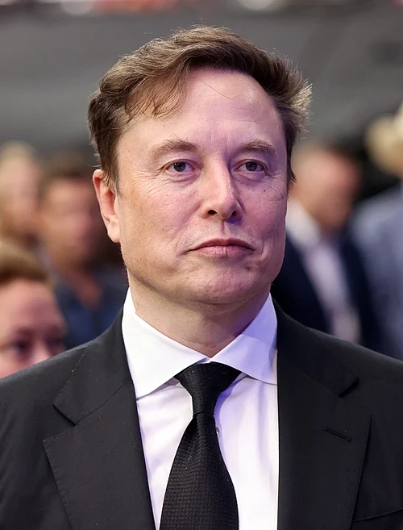

About Me
Elon Reeve Musk is a businessman and former public official who is the CEO and largest shareholder of Tesla and SpaceX.
Achievements
- Space Exploration (SpaceX): Founded in 2002, the company developed the Falcon 9, the world's first reusable orbital-class rocket, significantly reducing launch costs. He is also spearheading the development of the Starship spacecraft and the Starlink global satellite internet constellation.
- Electric Vehicles (Tesla): As CEO and product architect, Musk led the company to become the world's leading EV manufacturer, pushing electric cars into the mainstream with mass-market vehicles like the Model Y and pioneering long-range battery technology.
- Artificial Intelligence (xAI): After co-founding OpenAI in 2015, Musk later established xAI in 2023, the startup behind the Grok AI assistant, which has secured record-breaking investment rounds.
- Social Media (X): Musk acquired the platform formerly known as Twitter in 2022, subsequently rebranding it to X and introducing widespread monetization and algorithm shifts.